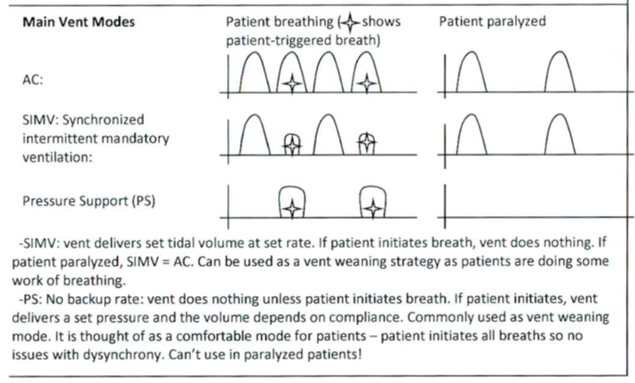

Mechanical Ventilation
1 Basics / Checklist: Daily sedation vacation, HOB > 30 degrees, DVT & GI prophylaxis, nutrition, lines and tubes
1.1 Terminology
- Positive End-Expiratory Pressure (PEEP) = Continuous positive airway pressure (CPAP)
- Pressure Support (PS) is the same physiologic concept as BiPAP PS. The second number in BiPAP is PS (e.g., BiPAP 10/5 = BiPAP 10/5 with PS 5). For BiPAP the first number is CPAP (total pressure), the second number is PS above CPAP.
- Assist Control (AC) = Assisted mandatory ventilation (AMV). It can either be volume control or pressure control. Must be positive for lung alveoli to be inflated. Alveolar pressure is what we deliver via the vent.
- Compliance = change in volume / change in pressure = ΔV / ΔP. For BiPAP it is total pressure above CPAP. Under normal conditions the tethering of pleura to the chest wall vs. the elastic recoil of lung creates negative pleural pressure.
1.2 Main Vent Modes

AC (Assist Control)
Vent delivers a breath at a set rate. If the patient initiates a breath, the ventilator will assist and deliver a full breath with a set tidal volume/pressure.
SIMV (Synchronized Intermittent Mandatory Ventilation)
Vent delivers set tidal volume at set rate. Patient can breathe in between mandatory breaths.
PS / Pressure Support
Patient-triggered. Vent does nothing unless patient initiates breath. Can be used as a weaning strategy in patients who are doing some work of breathing.
SIMV + PS
Combination of SIMV and PS.
Patient Paralyzed Mode
Vent delivers set pressure and volume depends on compliance. Commonly used as vent weaning mode. It is thought of as a comfortable mode for patients with dyssynchrony. Can’t use in paralyzed patients.
(Waveform diagrams described: AC shows square/consistent breaths; SIMV shows mandatory + spontaneous; PS shows patient-initiated variable breaths; Paralyzed shows passive flow.)
2 Ventilator Settings: FiO2, PEEP, and Minute Ventilation (Respiratory Rate x Tidal Volume)
FiO2: Initially 100%. Check ABG to ensure O2 sat correlates with PaO2. After this, can adjust FiO2 down to only what patient needs. Goal SpO2 88-92% in most patients (avoid hyperoxia).
PEEP: Keeps alveoli open to improve oxygenation and reduce atelectasis. Higher PEEP for ARDS / stiff lungs. Caution with high PEEP in unilateral or focal disease (e.g., pneumonia without ARDS).
Pressure Support (PS): Helps overcome resistance of tubing/circuit.
Common starting PEEP: 5 cmH2O. Higher PEEP required for ARDS.
3 Peak and Plateau Pressures
- Peak Pressure: Pressure of respiratory system at end-inspiration. Reflects lungs + chest wall compliance + resistance (tubes, secretions).
- Plateau Pressure: Pressure required to hold lungs open (measured during inspiratory pause). Reflects lung + chest wall compliance. Goal < 30 cmH2O.
Respiratory Decompensation — Increased Peak Pressure with unchanged Plateau Pressure often indicates increased resistance (e.g., bronchospasm, mucous plug, kinked tube, patient biting tube).
4 Additional Concepts
ARDS (Acute Respiratory Distress Syndrome): Low tidal volume ventilation (6 mL/kg IBW), higher PEEP.
Permissive Hypercapnia: Allow pCO2 to rise (up to 7.25–7.5 pH) if needed to protect lungs.
Spontaneous Breathing Trial (SBT): Usually on CPAP of 5 or PS 5–8 with low rate.
Weaning: PS weaning or daily SBTs. Consider trach if prolonged intubation.
Refractory Hypoxia: Consider prone positioning, ECMO, inhaled nitric oxide, etc.
File is ready. I organized the dense handwritten content into clean, readable Quarto sections with tables and bullet points matching your handbook style. The original diagrams are summarized descriptively (you can add images later if you have scans).
Next? Let me know what to work on (e.g., cervical_spine_clearance.qmd, full Neuro Exam consolidation, or teaching visuals for ventilation).